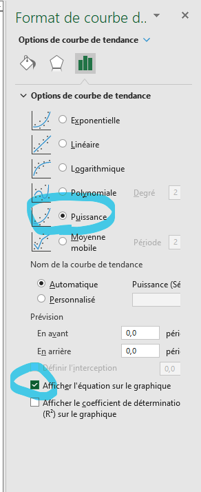

Comparer certains résultats obtenus avec la théorie.
Poser un regard critique sur les données.
Formuler des hypothèses de recherche.
1.
Dans l’analyse de la moyenne échantillonnale en fonction de la taille de l’échantillon, pourquoi est-ce que l’écart-type varie en fonction de \(n\text{?}\) Est-ce ce qui est attendu de la théorie?
2.
Utiliser les écarts types calculés dans la sous-section Sous-section 4.2.5 afin de tracer le graphique de l’écart type en fonction de la taille de l’échantillon. Ajouter une courbe de tendance de type « puissance » et comparer l’équation donnée par Excel avec celle établie par le théorème central limite. Commenter les différences.

Figure4.3.1.Insertion d’une courbe de tendance de type « puissance »
3.
Commenter l’allure des courbes à mesure que la valeur de \(n\) ou \(Nb_E\) augmente. Est-ce le comportement attendu? Justifier brièvement.
4.
La théorie de la loi normale stipule que \(99.73\%\) des données provenant d’une loi normale se situe entre \(-3\sigma\) et \(3\sigma\text{.}\) Vérifier ce fait à l’aide des \(10\,000\) échantillons de taille \(10\text{.}\) Utiliser la véritable moyenne \(\mu\) et \(\sigma_{\overline{X}}=\frac{\sigma}{\sqrt{10}}\text{.}\)
5.
Regarder la valeur minimale et la valeur maximale de la durée des trajets.
(a)
Est-ce que ces valeurs apparaissent suspectent? Expliquer pourquoi (au besoin, convertir en heures).
(b)
En tant qu’analyste, quelle démarche serait-il possible d’entreprendre afin de vérifier la validité des données?
6.
Le graphique ci-dessous illustre la distribution du maximum échantillonnale pour \(100\) échantillons de \(10\,000\) trajets en BIXI. On peut voir que la forme de la distribution n’est pas la même que la cloche de la loi normale, contrairement à celle pour la distribution des moyennes. Commenter cette remarque.
Figure4.3.2.
7.
Générer \(100\) échantillons de taille \(1000\) et considérer la proportion des trajets qui proviennent de membres de BIXI. Tracer l’histogramme des proportions échantillonnales.
8.
Formulez quelques hypothèses utilisant certaines des autres variables de cette base de données.